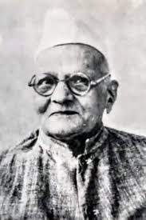

Gangadharrao Deshpande
Gangadharrao Balkrishna Deshpande (31 March 1871 - 30 July 1960), also known as the Lion of
Karnataka and Khadi Bhageeratha, was a towering leader of the Indian
independence movement from Belgaum.
He was the right-hand man of both Lokamanya Tilak and Mahatma Gandhi in succession. Deshpande served
as the Chairman of the Karnataka branch of the All-India Spinners' Association and was instrumental
in the historic 1924 Belgaum Congress Session.